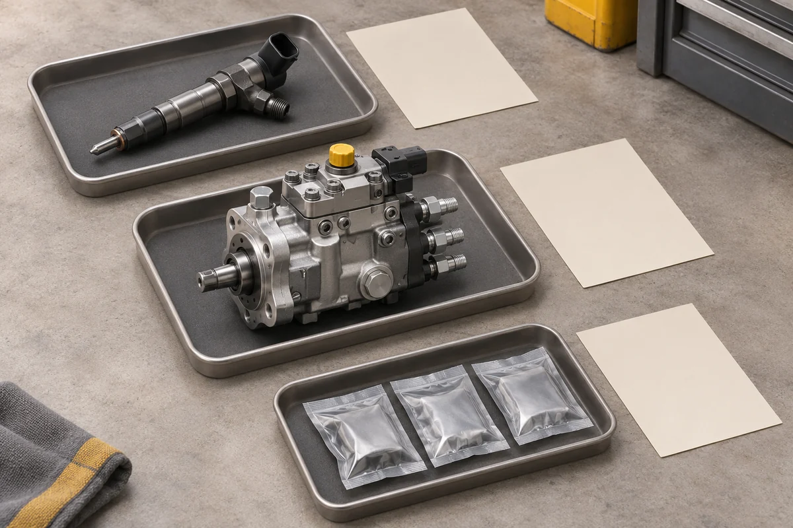

Несколько машин в ремонте: как собрать общий заказ запчастей

Когда запчасти нужны сразу для нескольких машин, сложность возникает ещё до оплаты. Механик дополнил заявку, снабженец объединил одинаковые позиции, а в переписке остался прежний вариант. В итоге общий заказ есть, но уже непонятно, кому предназначена каждая деталь и какая поставка задерживает ремонт.
Удобнее вести две связанные записи: потребность каждой машины и общий заказ поставщику. Первая отвечает на вопрос, куда пойдёт деталь. Вторая показывает, сколько нужно купить и на каких условиях. Связь между ними стоит сохранить до передачи запчастей в работу.
Что теряется при объединении заявок
Допустим, для машины А согласовали одну форсунку, для машины Б две. После проверки полных номеров и исполнения выяснилось, что во всех трёх строках нужна одна и та же позиция. Поставщику можно отправить общий запрос на три штуки. Но внутри хозяйства всё равно нужна запись: одна для А, две для Б.
Если оставить только итоговое количество, первую пришедшую деталь легко отдать тому, кто раньше подошёл за ней. Поэтому рядом с каждой потребностью полезно сохранить номер внутренней заявки, обозначение машины, ответственного механика и согласованную срочность. Название модели само по себе не всегда различает машины: в парке могут работать несколько одинаковых экземпляров.
Объединяйте позиции после проверки применимости. Похожее название или принадлежность к одному бренду ещё не позволяют сложить их в общую строку.
Разделите срочность внутри общего заказа
Одна машина может стоять без работы, а другая ждать планового ремонта. Общая заявка не обязывает отправлять всё одной посылкой. Попросите поставщика отдельно указать, какие позиции готовы к отгрузке, какие ожидаются и возможна ли частичная поставка.
Затем сравните два понятных варианта: ждать весь заказ или получить срочные детали отдельно. Для каждого нужны стоимость доставки, предполагаемая дата отгрузки и состав отправления. Фраза "есть в наличии" не отвечает на вопрос, когда груз передадут перевозчику.
Не назначайте срочность всему списку автоматически. Если каждая строка помечена как аварийная, отметка перестаёт помогать при распределении первой поставки.
Договоритесь, как вносить изменения
После согласования заказа механик может отменить позицию или добавить ещё одну. Опаснее всего исправить только свою таблицу, оставив у поставщика старый список.
Выберите одного человека, который передаёт изменения. Каждую новую версию списка датируйте, а в сообщении перечисляйте, что изменилось: добавили строку, уменьшили количество, перенесли срок. Попросите подтвердить изменения и сообщить, успели ли они попасть в сборку. Отправленное сообщение ещё не означает, что заказ уже пересчитан.
Артикулы храните как текст, чтобы таблица сохраняла начальные нули. Для общей заявки это особенно существенно: ошибка в объединённой позиции затронет сразу несколько машин.
Подготовьте распределение до прихода груза
Когда поставщик подтвердил состав отправления, свяжите его с внутренними заявками. Запишите, кому достанутся пришедшие позиции, где будут храниться остальные и кто проверит количество при получении. Если в первой посылке только часть одинаковых деталей, заранее согласуйте, какая машина получит их первой.
На складе удобно разделять партии по внутренним заявкам, сохраняя упаковку и маркировку. Так механик получает свою часть заказа, а снабженец видит оставшуюся потребность, даже если поставка приходит несколькими отправлениями.
Что передать поставщику
Для расчёта нужны подтверждённые позиции и количества, а для организации поставки ещё и приоритеты: что требуется срочно, допустимо ли разделение заказа, куда отправлять груз и с кем согласовывать замену условий.
В каталоге СМ ТЕХНО можно найти позиции для списка. При обращении по общей заявке сохраните распределение по машинам у себя, а поставщику передайте согласованный состав и порядок отгрузки. Тогда при частичной поставке будет понятно и что уже куплено, и какие работы ещё ждут деталей.